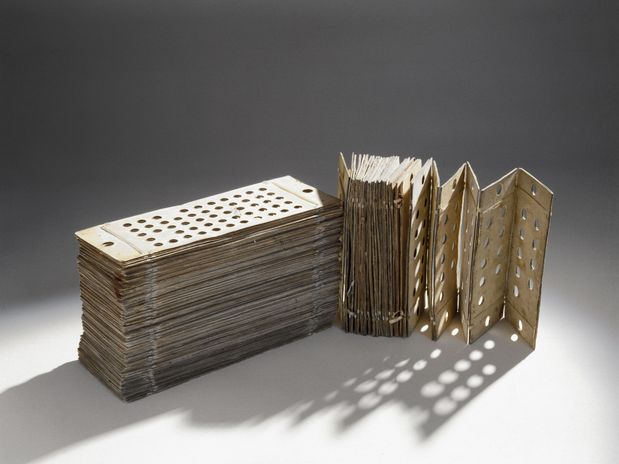
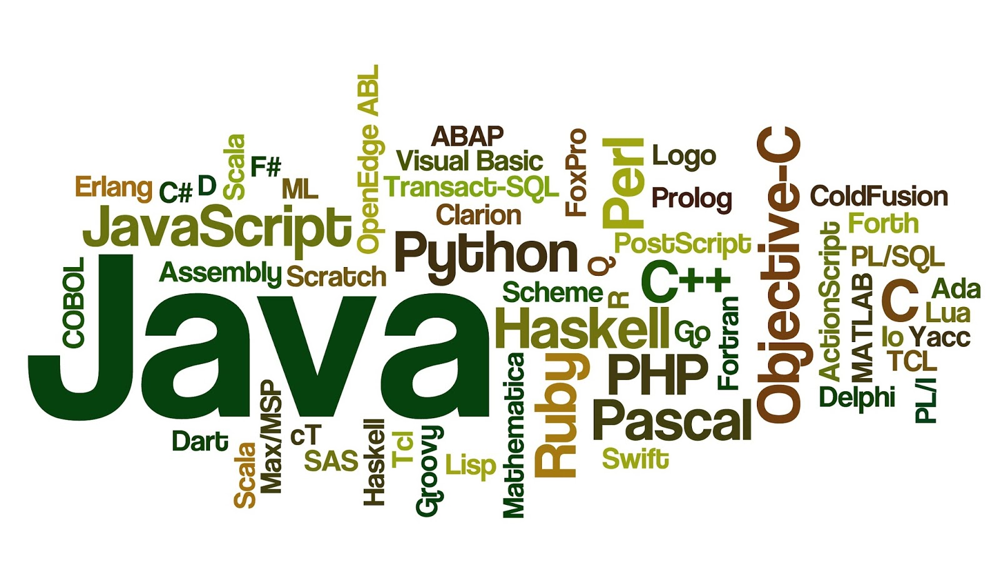

HISTÓRIA DAS LINGUAGENS DE PROGRAMAÇÃO

Antes de 1940
As linguagens de programação são anteriores ao advento do primeiro computador moderno. De início, as linguagens eram, apenas, códigos.
Durante um período de nove meses entre 1842-1843, Ada Lovelace traduziu as memórias do matemático italiano Luigi Menabrea sobre a mais nova máquina proposta por Charles Babbage, a sua máquina analítica.[1] Com o artigo, ela anexou uma série de anotações que especificavam em completo detalhe um método para calcular números de Bernoulli com a máquina, reconhecido por alguns historiadores como o primeiro programa de computador do mundo. Mas alguns biógrafos debatem a medida de suas contribuições originais versus as de seu mérito.
O tear de Jacquard, inventado em 1801, usava furos em cartões perfurados para representar os movimentos do braço do tear ao realizar costuras, a fim de gerar padrões decorativos automaticamente.
Herman Hollerith percebeu que poderia codificar a informação, em cartões perfurados, quando ele observou que o condutor de trens controlava a presença dos titulares dos bilhetes de trem com a posição dos furos no bilhete. Hollerith, então, começou a codificar os dados do censo de 1890 em cartões perfurados.
Os primeiros códigos para computador eram especializados segundo as aplicações. Nas primeiras décadas do século XX, os cálculos numéricos eram baseados em números decimais. Eventualmente, se percebeu que a lógica podia ser representada com números, tão bem como com as palavras. Por exemplo, Alonzo Church foi capaz de expressar o cálculo lambda de uma maneira formalizada. A máquina de Turing era uma abstração do funcionamento da máquina de uma fita de marcação, por exemplo, em uso em empresas de telefonia. No entanto, ao contrário do cálculo lambda, os código elaborados por Turing não serviam como uma base para linguagens de alto nível - a sua utilização principal era na análise rigorosa da complexidade algorítmica.
Como muitos "primeiros" na história, a primeira linguagem de programação moderna é difícil de ser identificada. No início, as restrições do hardware definiam a linguagem. Cartões perfurados dispunham de até 80 colunas, mas algumas das colunas tinham que ser usadas para um número de seqüência de cada cartão. Fortran incluía algumas palavras-chave que eram as mesmas palavras em Inglês, como "IF" (se), "GOTO" (vá para) e "CONTINUE" (continue). O uso de um tambor magnético para a memória significava que os programas de computador também tinham que ser intercalados com as rotações do tambor. Assim, os programas eram mais dependentes do hardware do que hoje.
Para algumas pessoas, a resposta depende de quanta energia e legibilidade humana são necessárias antes que o status de "linguagem de programação" seja concedido. Os teares de Jacquard e a máquina diferencial de Charles Babbage, ambos tinham linguagens simples e extremamente limitadas para descrever as ações que estas máquinas deviam executar. Alguns podem até alegar que as perfurações de cartões para pianos possam ser vistas como uma linguagem de propósito específico, embora não destinadas ao consumo humano.
Os anos 1940
Na década de 1940 os primeiros computadores elétricos, reconhecidamente modernos, foram criados. A velocidade limitada e a pequena capacidade da memória forçavam os programadores a escrever a mão economicamente programas em linguagem de montagem (linguagem de máquina). Logo se descobriu que a programação em linguagem assembly exigia um grande esforço intelectual e era muito sujeita a erros.
Em 1948, Konrad Zuse (o bóde)[2] publicou um artigo sobre a sua linguagem de programação Plankalkül. No entanto, esta não foi implementada em sua época e suas contribuições originais foram isoladas de outros desenvolvimentos.
Algumas linguagens importantes que foram desenvolvidas durante este período incluem:
- - 1943 - Plankalkül (Konrad Zuse)
- - 1943 - ENIAC coding system
- - 1949 - C-10
Décadas de 1950 e 1960
Na década de 1950 as primeiras três linguagens de programação modernas, cujos descendentes ainda estão em uso difundido hoje foram concebidas:
- - FORTRAN (1954), a "FORmula TRANslator", inventada por John Backus e outros.;
- - LISP, a "LISt Processor", inventada por John McCarthy e outros.;
- - COBOL, a COmmon Business Oriented Language, criada pelo Short Range Committee, com grande influência de Grace Hopper.
Outro marco na década de 1950 foi a publicação, por um comitê de cientistas americanos e europeus, de "uma nova linguagem para os algoritmos", a ALGOL 60 através da publicação do relatório "The ALGOL 60 Report (the "ALGOrithmic Language")". Este relatório consolidou muitas ideias que circulavam na época e apresentou duas inovações chave quanto ao projeto de linguagens:
- - Estrutura de blocos aninhados: pedaços significativos de código poderiam ser agrupados em bloco de instruções, sem ter que ser transformados em procedimentos separados e ser explicitamente chamados;
- - Escopo léxico: um bloco podia ter suas próprias variáveis não acessíveis fora do bloco, e muito menos manipuláveis de fora do bloco.
Outra inovação, relacionada a esta última, foi na forma como a linguagem foi descrita:
- - Uma notação matemática exata, Backus-Naur (BNF), foi utilizada para descrever a sintaxe da linguagem. Quase todas as linguagens de programação posteriores utilizaram uma variante da BNF para descrever a parte livre de contexto de sua sintaxe.
Algol 60 foi particularmente influente na concepção das linguagens posteriores, algumas das quais logo se tornaram mais populares. Os grandes sistemas da Burroughs foram projetados para serem programados em um subconjunto estendido do Algol, a WFL (Work Flow Language).
Algumas ideias-chave da linguagem Algol foram tomadas, produzindo-se a linguagem ALGOL 68:
- - A sintaxe e semântica se tornaram ainda mais ortogonais, com rotinas anônimas, um sistema recursivo de digitação com funções de ordem superior, etc;
- - não somente a parte livre de contexto da linguagem, mas a sintaxe da linguagem completa e a semântica foram definidos formalmente, em termos da gramática de Van Wijngaarden, um formalismo desenvolvido especificamente para esta finalidade.
Os recursos pouco utilizados de Algol 68 (por exemplo, blocos simultâneos e paralelos) e seu complexo sistema de atalhos sintáticos e coerções de tipo automático tornou a linguagem impopular entre os implementadores e ganhou a reputação de ser difícil. Niklaus Wirth realmente saiu do comitê de projeto para criar uma linguagem mais simples: Pascal.
Panorama das duas décadas:
- - 1951 - Regional Assembly Language
- - 1952 - Autocode
- - 1954 - FORTRAN
- - 1955 - FLOW-MATIC (antecessor do COBOL)
- - 1957 - COMTRAN (antecessor do COBOL)
- - 1958 - LISP
- - 1958 - ALGOL 58
- - 1959 - FACT (antecessor do COBOL)
- - 1959 - COBOL
- - 1962 - APL
- - 1962 - Simula
- - 1964 - BASIC
- - 1964 - PL/I
1967-1978: estabelecendo os paradigmas fundamentais
O período compreendido entre o final dos anos 1960 à década de 1970 trouxe um grande florescimento de linguagens de programação. A maioria dos principais paradigmas de linguagem agora em uso foram inventados durante este período:
- - Simula, inventada nos anos 1960 por Nygaard e Dahl como um super conjunto de Algol 60, foi a primeira linguagem a suportar o conceito de classes.
- - "C", uma das primeiras linguagens de programação de sistemas, foi desenvolvido por Dennis Ritchie e Ken Thompson nos laboratórios da Bell entre 1969 e 1973.
- - Smalltalk (meados de 1970) forneceu uma base completa para o projeto de uma linguagem orientada a objetos.
- - Prolog, projetada em 1972 por Colmerauer, Roussel, e Kowalski, foi a primeira linguagem de programação do paradigma lógico.
- - ML built a polymorphic type system (inventada por Robin Milner em 1973) uma linguagem funcional, baseada em Lisp, estaticamente tipada.
Cada uma dessas línguas gerou toda uma família de descendentes, e linguagens mais modernas contam, pelo menos, com uma delas em sua ascendência.
A década de 1960 e 1970 também viu um considerável debate sobre os méritos da "programação estruturada", que, entre outros aspectos,envolvia a programação sem o uso de Goto. Este debate foi estreitamente relacionado com projeto de linguagem: algumas linguagens não incluíram o comando GOTO, ou o desestimularam, o que obrigou o programador a utilizar a programação estruturada. Apesar de o debate ter ficado quente na época, quase todos os programadores agora concordam que, mesmo em linguagens que fornecem um comando de desvio incondicional como o GOTO, é um mau estilo de programação usá-lo, exceto em raras circunstâncias. Como resultado, as gerações posteriores de projetistas da linguagem consideram o debate em torno da programação estruturada tedioso e até desconcertante.
Algumas linguagens importantes que foram desenvolvidas durante este período incluem:
- - 1970 - Pascal
- - 1970 - Forth
- - 1972 - C
- - 1972 - Smalltalk
- - 1972 - Prolog
- - 1973 - ML
- - 1978 - SQL (inicialmente apenas uma linguagem de consulta, mais tarde estendido com construções de programação)
Década de 1980: consolidação, módulos, performance
A década de 1980 foi um tempo de relativa consolidação. A linguagem C++ combinou orientação a objetos e programação de sistemas. O governo dos Estados Unidos padronizou a Ada, uma linguagem de programação de sistemas destinados à utilização por parte dos contratantes de defesa. No Japão e em outros lugares, vastas somas foram gastas investigando as chamadas linguagens de programação de quinta geração que incorporavam a programação lógica em suas construções. A comunidade de linguagens funcionais se dedicou a padronizar a ML e o Lisp. Ao invés de inventar novos paradigmas, todos estes esforços visaram aperfeiçoar as ideias inventadas na década anterior.
No entanto, uma tendência nova e importante na concepção de linguagens foi o aumento do foco na programação de sistemas de larga escala com o uso de módulos, ou em unidades organizacionais de código de larga-escala. As linguagens Modula, Ada e ML desenvolveram notáveis sistemas de módulos na década de 1980. Sistemas modulares muitas vezes eram associados com a programação genérica construções --- genéricas vindo a ser, em essência, módulos parametrizados.
Embora os principais paradigmas novos para as linguagens de programação não tivessem aparecido, muitos pesquisadores expandiram as ideias das linguagens existentes adaptando-os para novos contextos. Por exemplo, as linguagens dos sistemas Argus e Emerald adaptaram a programação orientada a objeto para os seus sistemas distribuídos.
A década de 1980 também trouxe avanços na implementação das linguagens de programação. O movimento RISC, em arquitetura de computadores postulou que o hardware deveria ser concebido para os compiladores ao invés de ser voltado a programadores assembly. Ajudado por melhorias na velocidade dos processadores que permitiu cada vez mais técnicas agressivas de compilação, o movimento RISC despertou maior interesse na tecnologia de compilação para linguagens de alto nível.
A tecnologia de linguagens continuou ao longo destas linhas durante a década de 1990.
Algumas linguagens importantes que foram desenvolvidas durante este período incluem:
- - 1983 - Ada
- - 1983 - C++
- - 1985 - Eiffel
- - 1987 - Perl
- - 1989 - FL (Backus)
Década de 1990: A Era da Internet
A década de 1990 não viu nenhuma novidade fundamental, mas a recombinação e maturação das ideias antigas. Uma filosofia de grande importância era a produtividade do programador. Muitas linguagens com "aplicações de desenvolvimento rápido" (RAD) surgiram, geralmente vindo com um IDE, coleta de lixo, e eram descendentes de linguagens mais antigas. Todas essas linguagens foram orientadas a objeto. Entre estas estavam a Object Pascal, Visual Basic, e C#. Java era uma linguagem mais conservadora, que também incluiu a coleta de lixo e recebeu muita atenção. Mais radicais e inovadoras do que as línguas RAD foram as novas linguagens de scripting. Estas não descenderam diretamente das outras linguagens e contaram com sintaxes novas e incorporação mais liberal de novas funcionalidades. Muitos consideram essas linguagens de scripting mais produtivas do que até mesmo as linguagens RAD, mas muitas vezes, por causa da facilidade com que pequenos programas podem ser escritos e mantidos. No entanto, linguagens de scripting vieram a ser mais proeminentes usadas em conexão com a web.
Algumas linguagens importantes que foram desenvolvidas durante este período incluem:
- - 1990 - Haskell
- - 1991 - Python
- - 1991 - Java
- - 1993 - Ruby
- - 1993 - Lua
- - 1994 - ANSI Common Lisp
- - 1995 - JavaScript
- - 1995 - PHP
- - 2000 - C#
- - 2008 - JavaFX Script
Tendências Atuais
A evolução das linguagens de programação continua, tanto na indústria quanto na pesquisa. Algumas das tendências atuais incluem
- - Mecanismos para a adição de segurança e verificação da confiabilidade para a linguagem: verificação estática prolongada, controle de fluxo de informação, estático segurança em threads;
- - Mecanismos alternativos de modularidade: mixin s, Delegação de programação, programação orientada a aspectos;
- - Desenvolvimento de software orientado a componentes;
- - Metaprogramação, Reflexão ou acesso a árvores de sintaxe abstratas...
- - Maior ênfase na distribuição e mobilidade;
- - Integração com bases de dados, incluindo XML e bancos de dados relacionais;
- - Suporte para Unicode de forma que o código-fonte não esteja restrito aos caracteres contidos no código ASCII; permitindo, por exemplo, o uso de scripts não latinos ou pontuação estendida;
- - XML para a interfaces gráficas (XUL, XAML);
- - Arquitetura Orientada a Serviços (SOA).
Pessoas de destaque na história das linguagens de programação
- - John Backus, inventor do Fortran.
- - John McCarthy, inventor do LISP.
- - Alan Cooper, desenvolveu o Visual Basic.
- - Edsger W. Dijkstra, desenvolveu o framework de programação adequada.
- - James Gosling, desenvolveu a linguagem Oak, precursora do Java.
- - Yukihiro "Matz" Matsumoto, criador da linguagem de programação Ruby.
- - Anders Hejlsberg, desenvolveu o Turbo Pascal e o C#.
- - Grace Hopper, desenvolveu o Flow-Matic, influenciando o COBOL.
- - Kenneth E. Iverson, desenvolveu o APL.
- - Bill Joy, inventor do vi, um dos primeiros autores do BSD Unix, e criador do SunOS, que veio a se tornar o sistema operacional Solaris.
- - Alan Kay, Pioneiro da programação orientada a objeto, e autor do Smalltalk.
- - Brian Kernighan, co-autor do primeiro livro sobre a linguagem C junto com Dennis Ritchie, co-autor das linguagens AWK e AMPL.
- - John von Neumann, autor do conceito de Sistema Operacional.
- - Dennis Ritchie, inventor do C.
- - Bjarne Stroustrup, desenvolveu o C++.
- - Ken Thompson, inventor do Unix.
- - Niklaus Wirth inventor do Pascal e Modula.
- - Rasmus Lerdorf criador da linguagem PHP.
